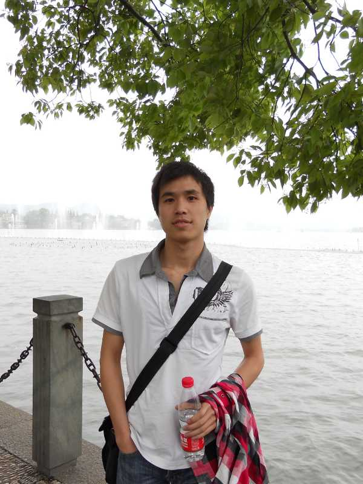
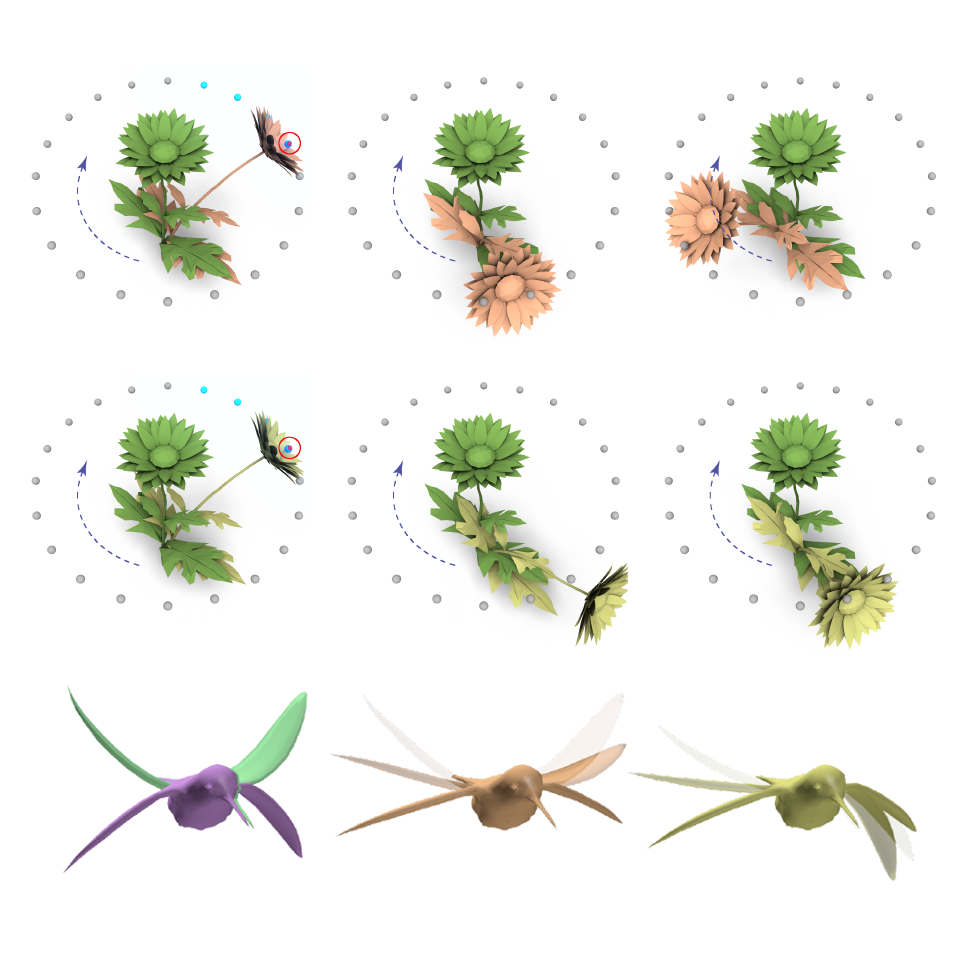
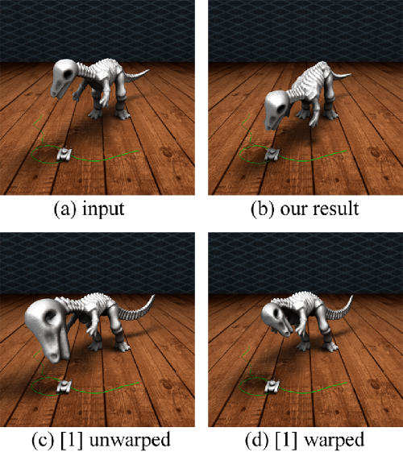

|  | Siwang Li (李嗣旺) | |
| Email: lisiwang@zjucadcg.cn | ||
| Address: Zijin gang Campus of Zhejiang University, Hangzhou City, China. |
|  | Space-Time Editing of Elastic Motion through Material Optimization and Reduction | |
| Siwang Li, Jin Huang, Fernando de Goes, Xiaogang Jin, Hujun Bao, and Mathieu Desbrun |
||
|
ACM Transactions on Graphics (SIGGRAPH), to appear in 2014
[PDF] [VIDEO] |
||
Abstract We present a novel method for elastic animation editing with spacetime constraints. In a sharp departure from previous approaches, we not only optimize control forces added to a linearized dynamic model, but also optimize material properties to better match user constraints and provide plausible and consistent motion. Our approach achieves efficiency and scalability by performing all computations in a reduced rotation-strain (RS) space constructed with both cubature and geometric reduction, leading to two orders of magnitude improvement over the original RS method. We demonstrate the utility and versatility of our method in various applications, including motion editing, pose interpolation, and estimation of material parameters from existing animation sequences
|
||
|  | Interactive Elastic Motion Editing through Spacetime Position Constraints | |
| Siwang Li, Jin Huang, Mathieu Desbrun. and Xiaogang Jin | ||
|
Journal of Computer Animation and Virtual Worlds (CASA), 2013
[PDF] [VIDEO] |
||
Abstract We present an intuitive and interactive approach for motion editing through spacetime constraints on positions. Given an input motion of an elastic body, our approach enables the user to interactively edit node positions in order to alter and fine-tune the motion. We formulate our motion editing as an optimization problem with dynamics constraints to enforce a physically-plausible result. Through linearization of the editing around the input trajectory, we simplify this constrained optimal control problem into an unconstrained quadratic optimization. The optimal motion thus becomes the solution of a dense linear system, which we solve efficiently by applying the adjoint method in each iteration of a conjugate gradient solver. We demonstrate the efficiency and quality of our motion editing technique on a series of examples. |
||